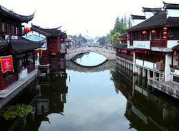

Welcome
The US-China Education Council is committed to promoting cross-cultural understanding and educational exchanges between United States and China. For this purpose, we organize programs that allow participants to visit, observe, and experience a different culture. If you want to visit China, teach or study in China, we are here to help.
With a cultural tradition of over 5,000 years, many renowned sites and beautiful scenery, China has a lot to offer to Americans. And the United States, with its democratic system, advanced technology and best educational resources, also holds special charm for the Chinese.
Check programs that interest you. We look forward to assisting you.
Enjoy Our Programs in China
Teaching and studying in China, for one semester or one year, will provide opportunities to learn the Chinese language, make friends with the locals, and have a more in-depth understanding of Chinese culture.
And attending China tours is a common way for Americans to see, and learn about, China. Since 2002, every year, we have been organizing China tours for educators, students, and colleagues from other different professions.
China tour itineraries vary, from one week, 10 days to two weeks, which, with tours to renowned cities, will offer many benefits:
- Vists to many renowned sites (e.g., the Great Wall, the Forbidden City, Imperial Palace Museum, Tiananmen Square, the Temple of Heaven, the Summer Palace, the Terra Cotta Soldiers Museum, the Confucius Temple, Jiming Buddhist Temple, etc.), in ancient cities of Beijing, Xi’an and Nanjing, allow you to see thousands of years of China's history, and appreciate China’s unique cultural tradition in art, architecture, and religion.
- Trips to Guilin, Suzhou and Yangtze River will give you immense moments to enjoy China’s beautiful scenery: e.g., exquisite gardens in Suzhou, surreal views on the Lijiang River, breathtaking three Gorges, etc.
- You will know that China is not only an ancient civilization, it is also becoming quite modern: In fact, in every city you visit, you will find China is undergoing rapid modernization in all areas of life -- even in ancient cities of Beijing' Xi'an and Nanjing, tradition and modernization exist side by side. The best modernization is seen in Shanghai,China’s commercial and financial center.
- Spring break special trips will, in addition to group tours to those renowned sites of historical and cultural importance, will plan school visits that will allow you to interact with educators and students in China. (Other custom tours will also arrange visits to institutions and/or business in the participants’ professions.)
